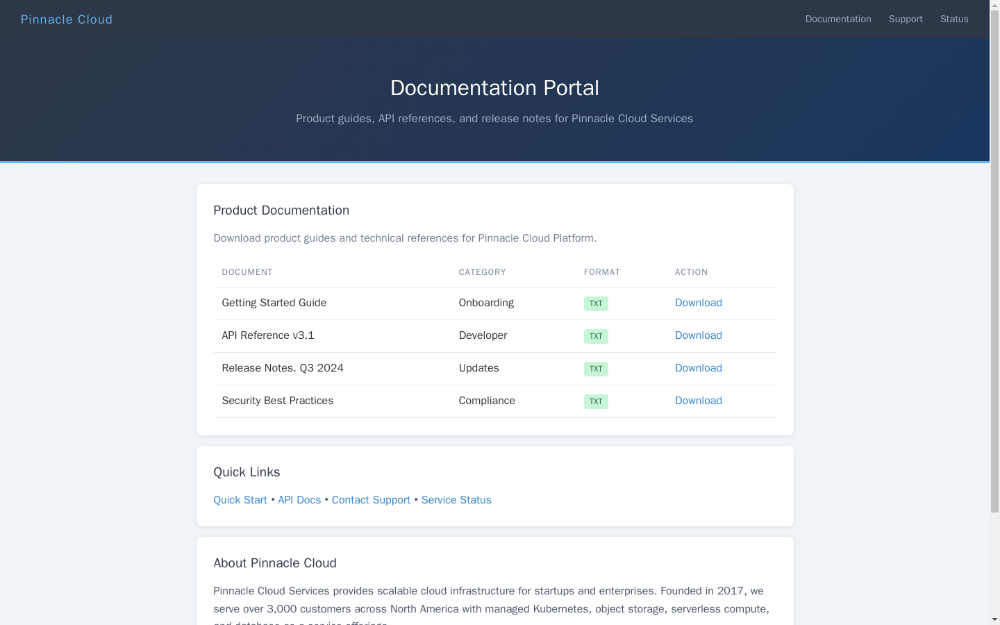
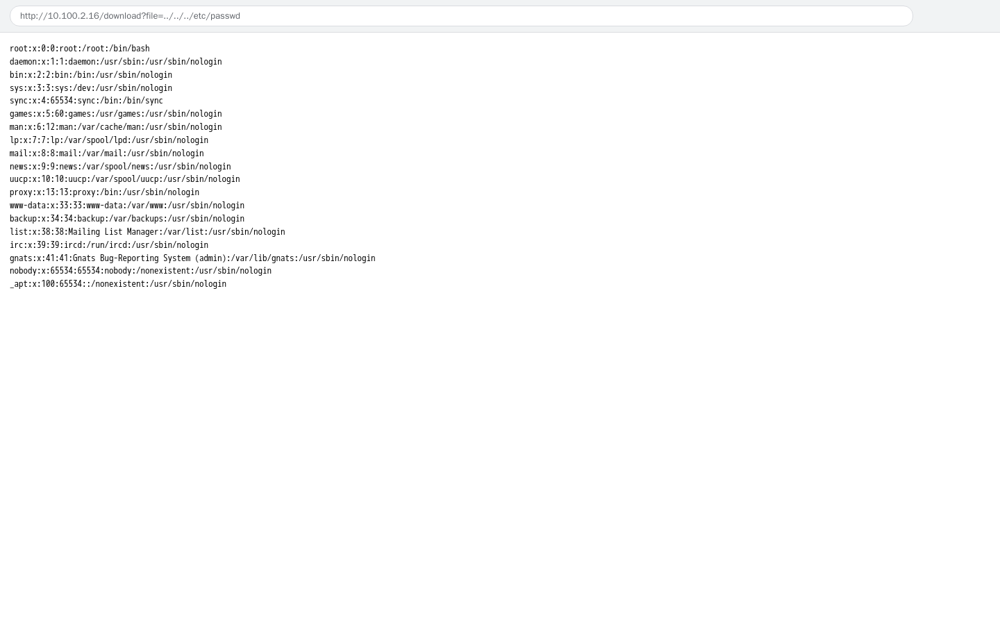

Exercise 4: Directory Traversal
Before You Begin
Weeks 1 through 3 focused on network-level enumeration; scanning ports, identifying services, and probing protocols like SMB (Server Message Block). Week 4 shifts focus from the network layer to the application layer, where vulnerabilities live inside the logic of web applications rather than in open ports. Your VPN must be connected and your terminal open before continuing.
Scenario
Pinnacle Cloud Services runs a customer documentation portal where clients can download product guides, API references, and release notes. The portal was built quickly by a junior developer and went live without a security review.
Marcus Reed (Engineering Manager) authorized the assessment: "The portal is simple; serves static files. I cannot imagine there is much risk there. But our compliance team wants a sign-off before the SOC 2 audit."
Your job is to test whether the file download feature can be abused to read files outside the intended directory. Two assessment tokens have been placed on the server; one in the application directory and one that requires full filesystem traversal to reach.

Your Objectives
The documentation portal presents a specific attack surface worth investigating. Your goals for the assessment are listed below.
- Identify a file download feature vulnerable to path traversal
- Craft directory traversal payloads using
../sequences - Read system files outside the web application root
- Extract two assessment tokens from the server
- Assemble and submit the flag in
OCR{...}format
Background: Path Traversal Attacks
Web applications often serve files by taking a filename from the URL (Uniform Resource Locator) and reading that file from a directory on the server. A download endpoint might receive a request like /download?file=guide.pdf and return the contents of /var/www/app/docs/guide.pdf. The application concatenates a base directory path with the user-supplied filename to locate the file on disk.
Path traversal; also called directory traversal; exploits the way operating systems interpret the ../ sequence. Each ../ moves one directory level upward in the filesystem hierarchy. When a web application fails to validate user input, an attacker can replace the expected filename with a chain of ../ sequences to escape the intended directory and read arbitrary files. For example, requesting /download?file=../../../etc/passwd tells the server to go up three directories from the docs folder and then into /etc/passwd.
Input validation is the primary defense against path traversal. A secure application strips or rejects ../ sequences, uses an allowlist of permitted filenames, or resolves the full path and confirms the result stays within the expected directory. Without these checks, any file readable by the web server process is exposed to the attacker.
graph TD
A["Browser requests<br/>guide.pdf"] -->|"Normal request"| B["Server reads<br/>/var/www/app/docs/<br/>guide.pdf"]
B --> C["Returns PDF<br/>to browser"]
D["Browser requests<br/>../../../etc/passwd"] -->|"Traversal attack"| E["Server reads<br/>/etc/passwd"]
E --> F["Returns system<br/>file to attacker"]
style A fill:#4a90d9,color:#fff
style B fill:#6aaa64,color:#fff
style C fill:#6aaa64,color:#fff
style D fill:#d9534f,color:#fff
style E fill:#d9534f,color:#fff
style F fill:#d9534f,color:#fffThe diagram above contrasts a normal file download with a traversal attack. The normal path stays within the application's document root, while the traversal path escapes upward through the filesystem to reach sensitive system files.
Tool Primer: curl for Web Testing
curl is a command-line tool for transferring data over HTTP (Hypertext Transfer Protocol) and other protocols. Penetration testers use curl to send precise requests to web applications and inspect the raw responses without a browser getting in the way. The tool comes pre-installed on most Linux systems.
Basic GET request with curl
The command below fetches the page at the given URL and prints the HTML (Hypertext Markup Language) response body to the terminal.
Useful flags for web testing:
| Flag | Purpose |
|---|---|
-s |
Silent mode; hides the progress bar |
-o /dev/null |
Discards the response body (useful with -w) |
-w '%{http_code}' |
Prints the HTTP status code (200, 404, 500, etc.) |
-v |
Verbose mode; shows request and response headers |
-L |
Follows HTTP redirects automatically |
Check whether a page exists
The command below requests a file but prints only the HTTP status code, a fast way to probe for valid paths.
A 200 status code means the server found and returned the file. A 404 means the file was not found. A 500 may indicate a server error triggered by unexpected input; which can itself be informative during testing.
Walkthrough
Step 1: Launch the Exercise
Open the platform in your browser and start the exercise environment. You need a running lab before any web requests will reach the target.
- Navigate to Exercises and locate the Week 4 challenge
- Click Launch on "Directory Traversal"
- Wait for the status to change to Running
- Note the target IP displayed in the Active Lab View
Step 2: Browse the Application and Identify the Download Feature
Fetch the portal home page
Before testing for vulnerabilities, explore the application as a normal user would. Retrieve the documentation portal to understand what features are available.
Replace <target> with the IP address shown in the Active Lab View. Read through the HTML output and look for links to downloadable files. The portal should list documents such as product guides and API references, each with a download link.
Step 3: Examine the URL Structure of the Download Endpoint
Click one of the download links (or inspect the HTML source) and observe how the application passes the filename to the server. Pay attention to the URL in the address bar or in the href attribute of the download links.
You should see a pattern like:
The file parameter tells the server which document to retrieve. The server likely appends the value of file to a base directory path and reads that location from disk. The question is whether the server validates the input before using it.
Step 4: Test Basic Traversal with /etc/passwd
Test traversal against /etc/passwd
The /etc/passwd file exists on every Linux system and is world-readable by default, making it the standard first target when testing for path traversal. A successful read confirms the vulnerability exists.
If the application is vulnerable, the response will contain lines resembling:
Seeing /etc/passwd content confirms that the file parameter is vulnerable to directory traversal. The ../../../ sequence moved up three levels from the application's document directory and into the system root.

Step 5: Extract Token from config/token.conf
Read the config token via traversal
The first assessment token is stored in a configuration file one level above the document directory. Retrieve the token by traversing up a single level into the config directory.
The response should contain a line in the format token=<value>. Record the value after the equals sign; you will need it to assemble the final flag.
Step 6: Extract Flag from /root/flag.txt
Read the root flag via deep traversal
The second assessment token requires full filesystem traversal to reach the /root directory. Use a longer ../ chain to traverse from the document directory all the way to the filesystem root.
Record the value returned. Combined with the token from Step 5, you now have both components needed to assemble the flag.
Record Your Findings
Record the output from each step below. Documenting your payloads and responses builds evidence for the assessment report.
curl output for /etc/passwd test:
Token from config/token.conf:
Source Value ../config/token.confToken from /root/flag.txt:
Source Value ../../../root/flag.txtAssembled flag:
Step 7: Interpret the Results
Review what you discovered during the assessment. Three findings emerged from the testing.
- Path traversal confirmed: The
/downloadendpoint accepts../sequences without sanitization, allowing access to files outside the document root. Any file readable by the web server process is exposed. - System file disclosure: The
/etc/passwdfile was retrieved, confirming full filesystem traversal. While/etc/passwditself does not contain passwords on modern Linux systems, its contents reveal usernames, home directories, and shell assignments that aid further attacks. - Sensitive data extracted: Both assessment tokens were retrieved from locations outside the intended document directory. In a real engagement, these could be configuration files containing database credentials, API keys, or encryption secrets.
The root cause is missing input validation on the file parameter. The application blindly concatenates user input with a base path and reads the resulting file from disk.
Flag Format
Assemble the flag using the tokens in the order you discovered them:
OCR{<config_token>_<root_token>}
Where <config_token> is the value you extracted from the config directory traversal (Step 5), and <root_token> is the value from the /root filesystem traversal (Step 6).
Step 8: Submit the Flag
Assemble the two tokens you extracted into the OCR{...} flag format. Navigate to the Submit Flag form on the platform, paste your assembled flag, and click Submit.
Analysis Questions
Consider these questions to deepen your understanding of path traversal and web application security. Each answer appears directly below its question.
1. Why is /etc/passwd typically the first file testers request when checking for path traversal?
Reveal Answer
The /etc/passwd file exists on every Linux system and is readable by all users by default. A successful read confirms the vulnerability without requiring elevated privileges. The file also contains useful reconnaissance data such as usernames and home directory paths.
2. An application strips all occurrences of ../ from the input before using it. Can an attacker still achieve path traversal? How?
Reveal Answer
A single-pass strip can be bypassed with a payload like ....//. When the application removes the inner ../, the remaining characters reassemble into ../. Effective defenses resolve the full canonical path after processing and verify the result falls within the allowed directory, rather than relying on string replacement alone.
3. What specific code-level fix would prevent the vulnerability you exploited in the documentation portal?
Reveal Answer
The application should resolve the user-supplied filename to an absolute path (using a function like Python's os.path.realpath()), then check that the resolved path starts with the expected base directory. Requests that resolve outside the base directory should be rejected. An allowlist of permitted filenames provides an even stronger defense.
Key Takeaways
- Path traversal exploits the
../directory sequence to escape a web application's intended file-serving directory and read arbitrary files on the server - Input validation is the primary defense; applications must verify that resolved file paths stay within the expected directory before reading from disk
- System files like
/etc/passwdserve as a reliable proof-of-concept for traversal vulnerabilities, confirming the flaw exists before searching for higher-value targets - Configuration files often contain credentials, tokens, and secrets that escalate the impact of a traversal vulnerability far beyond reading public system files
- Week 5 builds on web application testing by introducing more complex attack vectors; the enumeration and traversal skills from the first four weeks form the foundation for those challenges